The scenario
A friend needed to update their iPhone but did not have, or otherwise need, Wi-Fi. Fortunately they had an Ethernet connection into their MacBook, so we used it to create a temporary Wi-Fi network, connect their phone, and run the update.
Prerequisites
- A Mac of any type, plugged into the network via an Ethernet cable.
- The Mac should not currently be connected to another Wi-Fi source.
Open System Preferences
Open System Preferences by clicking the Apple logo in the upper left-hand corner of the screen and selecting it from the menu. This is where all of the configuration happens.
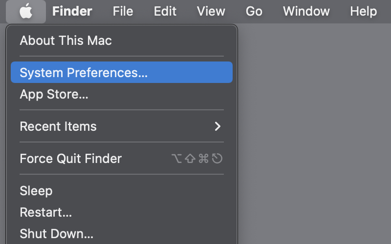
Check Wi-Fi status in the menu bar
Click Network in System Preferences, then ensure Show Wi-Fi status in Menu Bar is checked.
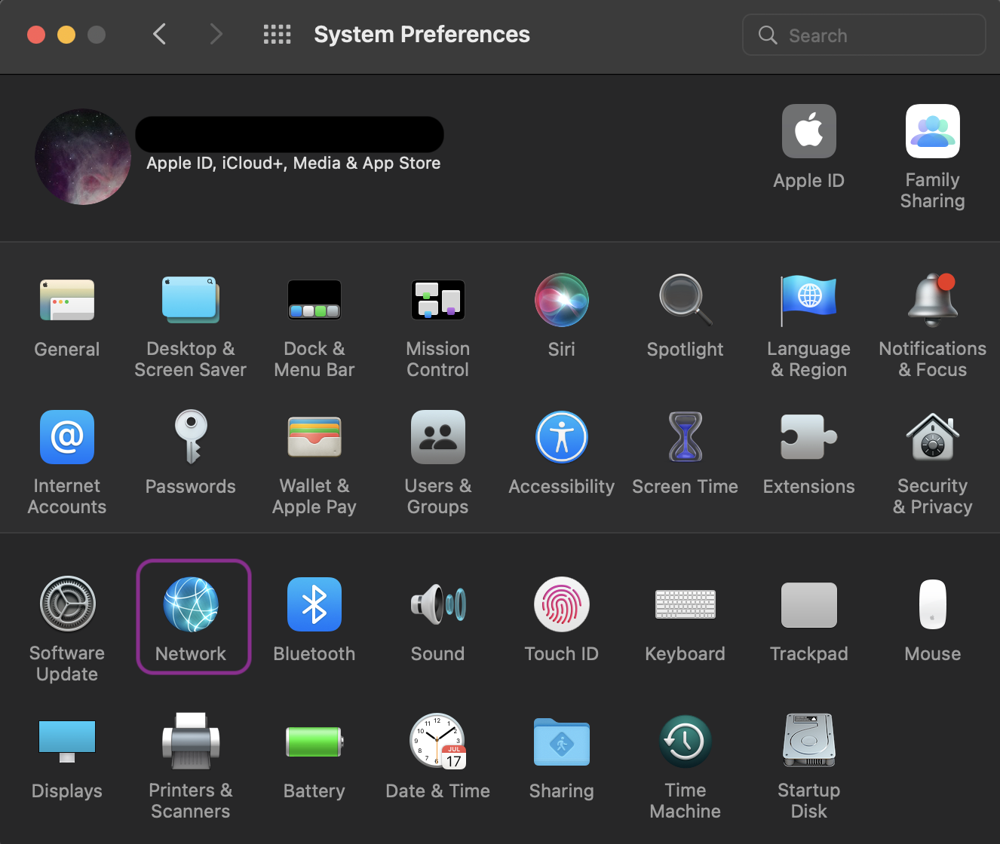
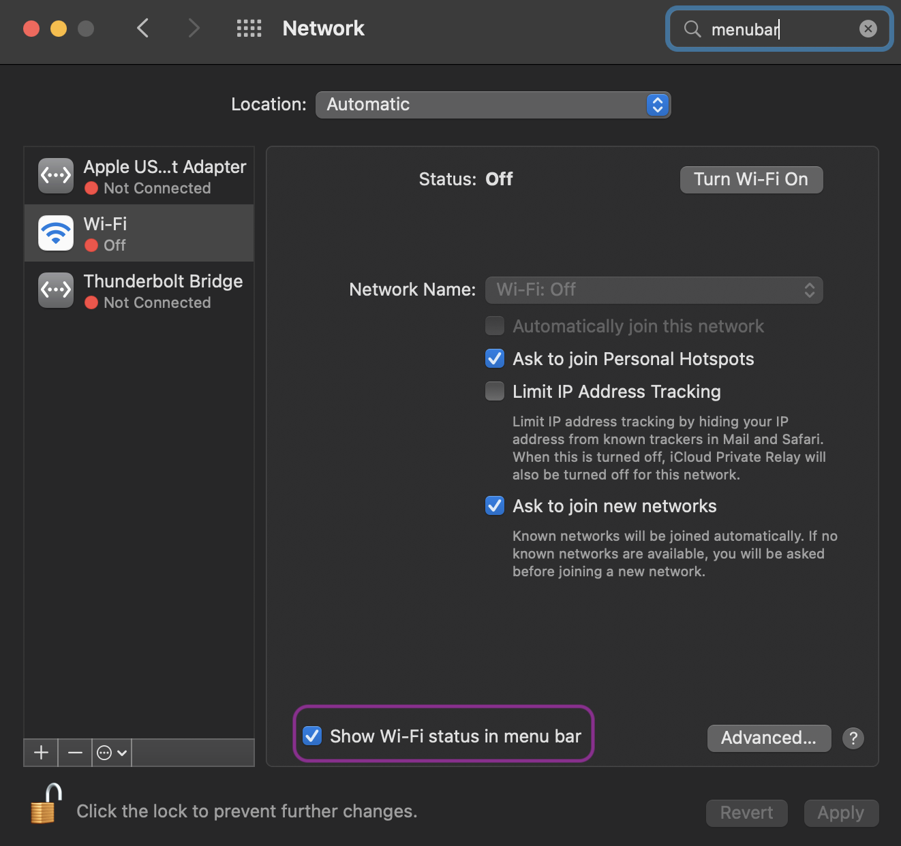
Open Sharing preferences
Click the back button to return to the main System Preferences window, then select Sharing.
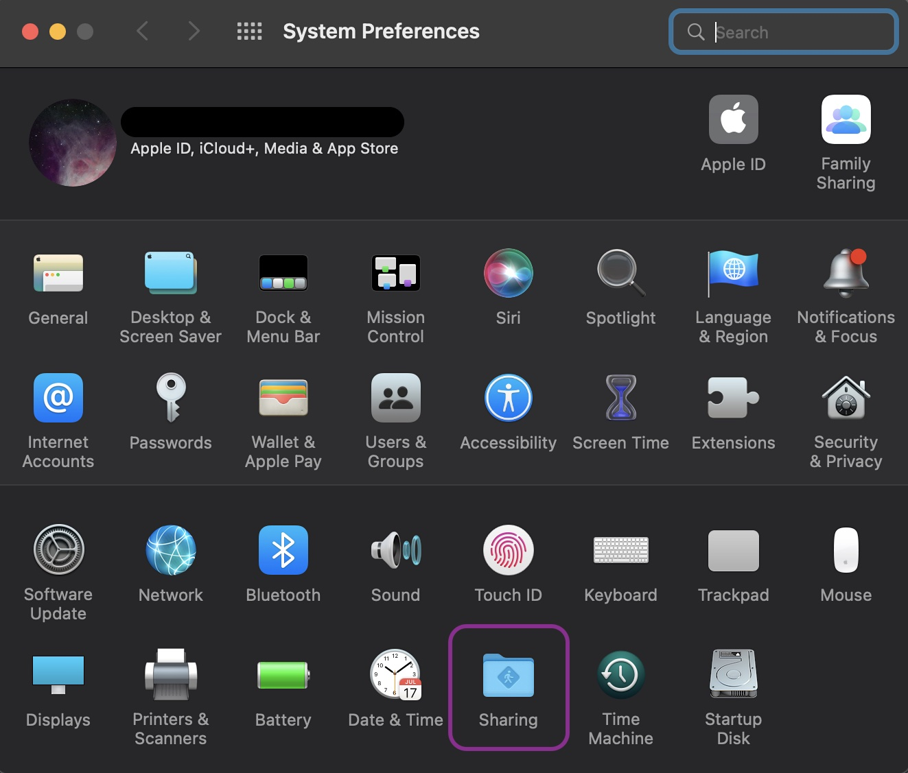
You may need to unlock the window to make changes. Click the lock icon and enter your username and password. The account must have administrator rights — if you have only one account on this Mac, it will work.
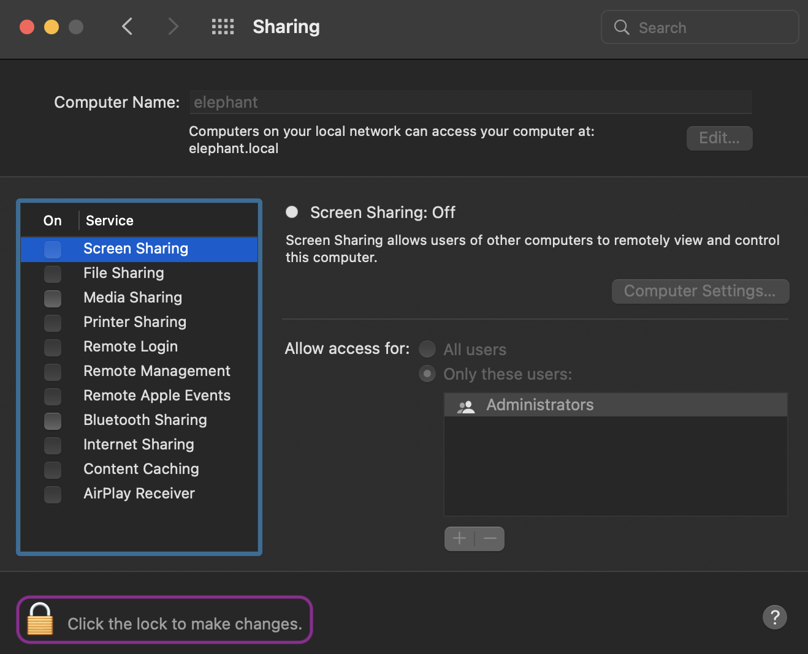
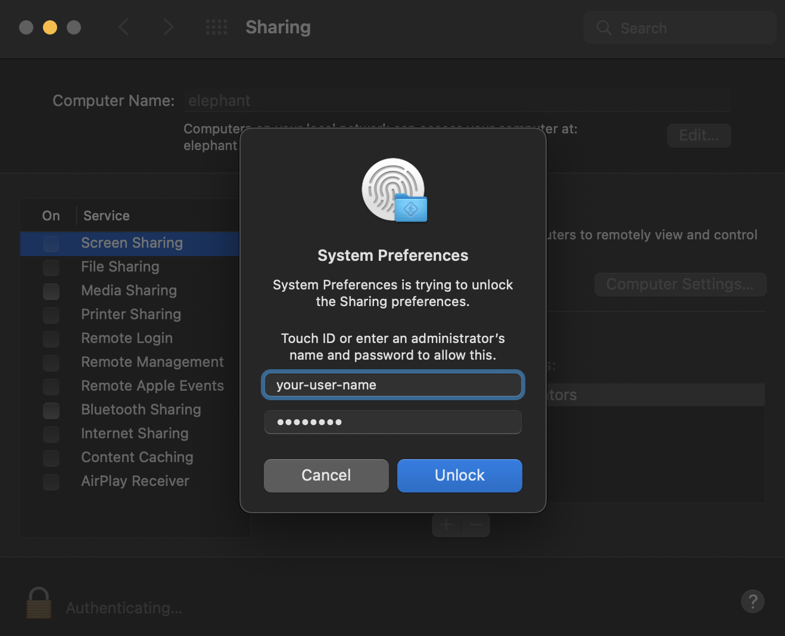
Configure Internet Sharing
Now unlocked, let’s select Internet Sharing to get started. On this page, ensure the Share your connection from: selection from the drop down contains something about Ethernet.
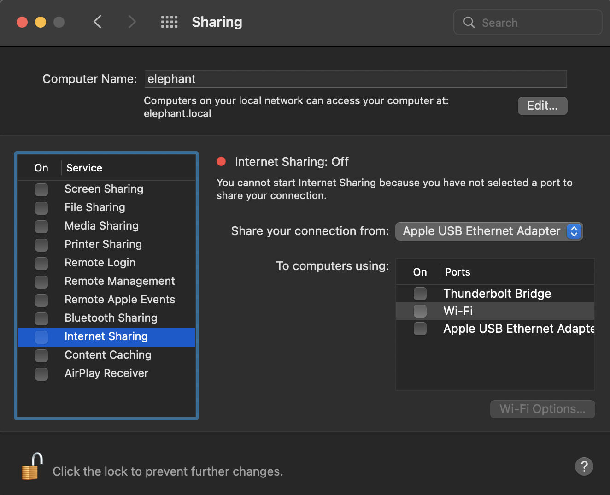
Next, click the box next to Wi-Fi to select it, and then click the Wi-Fi Options button.
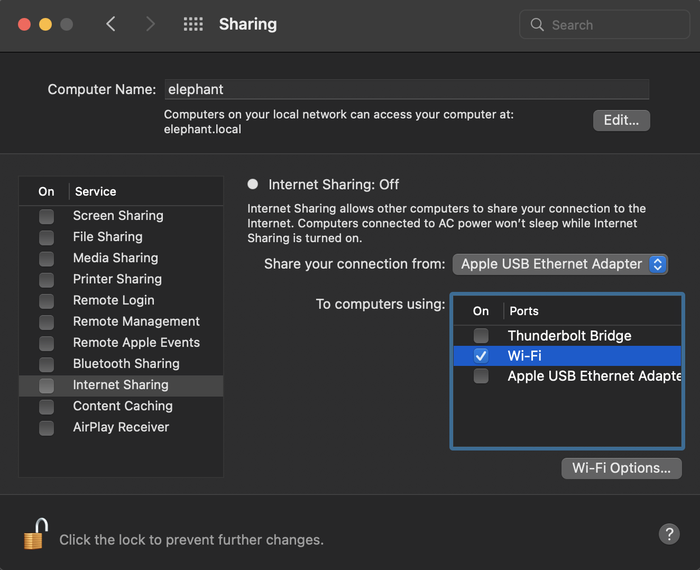
Set the network name and password
In the Wi-Fi Options window that pops up:
- Create a Network Name you will recognise later.
- Select a Channel.
- Ensure Security is set to WPA2/WPA3 Personal.
- Set a strong password — a short passphrase of around 15 characters is a great practice.
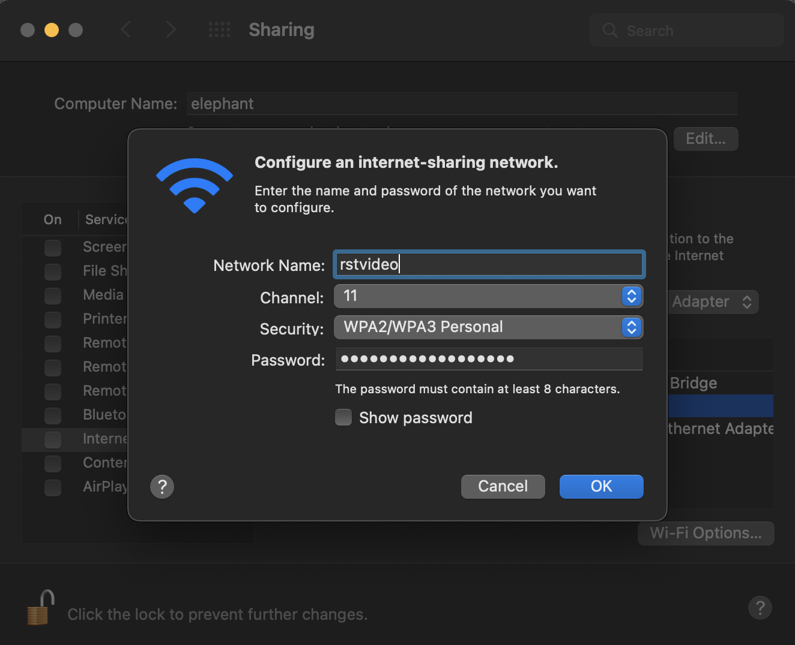
Click OK when complete.
Turn on Internet Sharing
Back in the Sharing window, notice the Wi-Fi symbol in the menu bar is still greyed out, and the window still shows Internet Sharing: Off.
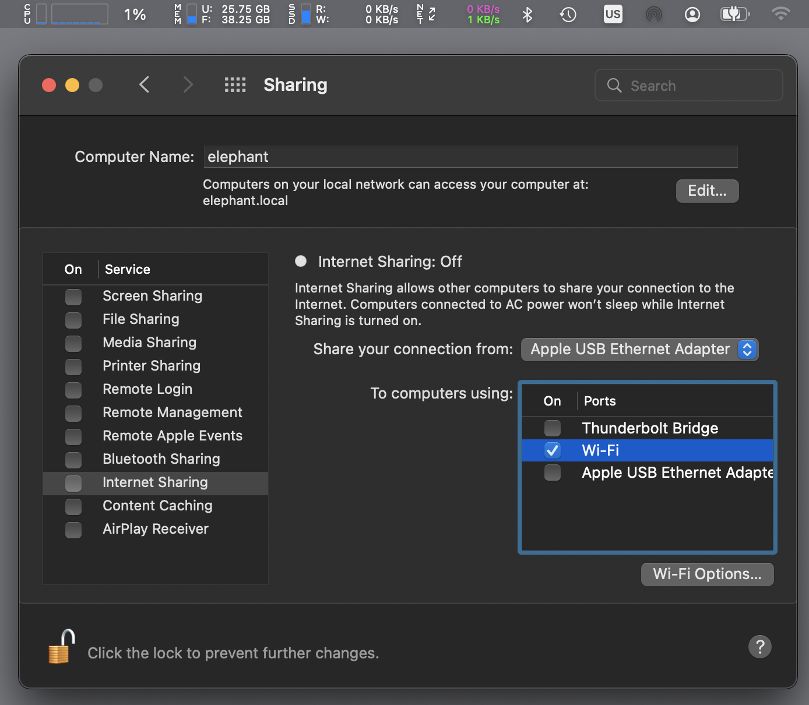
To turn the hotspot on, check the box next to Internet Sharing. When the pop-up warning appears, click Start.
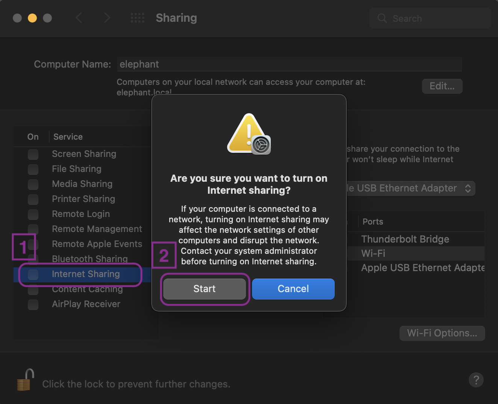
Confirm it's working
You should now see three signs that your Wi-Fi hotspot is live:
- The service list shows Internet Sharing with a check mark.
- A green light appears and the status reads Internet Sharing: On.
- The Wi-Fi indicator in the menu bar shows a small arrow inside it, indicating this Mac is broadcasting Wi-Fi.
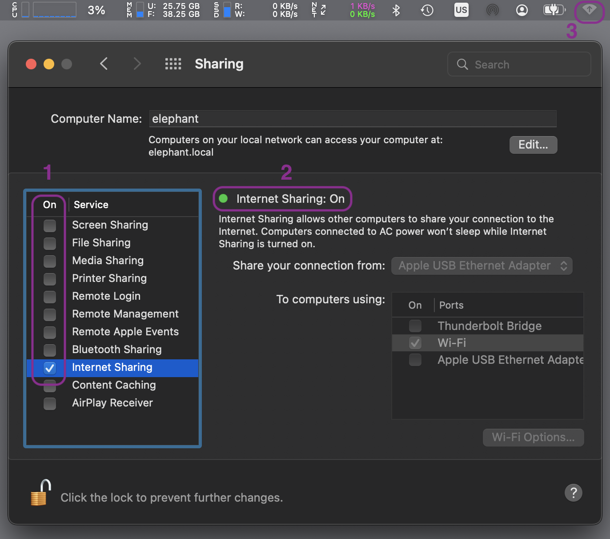
Connect your device
Open Settings on your iPhone, iPad, or other device and join the network you just created using the name and password set in the Wi-Fi Options step above.
Turn it off when done
One final step — be sure to disable the hotspot when you're done to best protect your Mac. Uncheck the box next to Internet Sharing in the service list.
The Sharing window will confirm Internet Sharing is now off, and the green indicator will disappear.
Don't worry about losing any settings — your network name, password, and configuration are saved. Next time you need the hotspot, simply check the box again to turn it back on. The Wi-Fi indicator in the menu bar will return to its normal state.
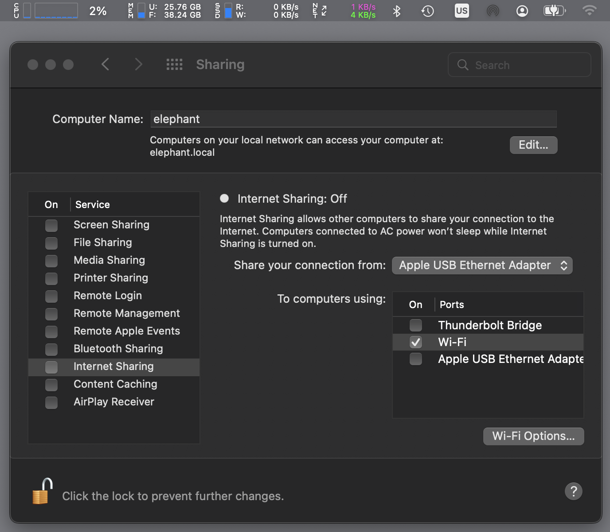